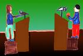

پذيرش > همراهان > نامه های شما > درد دل یک غیر کمپینی با یک کمپینی / حمید صوفی، آسیه امینی


 درد دل یک غیر کمپینی با یک کمپینی / حمید صوفی، آسیه امینی درد دل یک غیر کمپینی با یک کمپینی / حمید صوفی، آسیه امینی
22 بهمن 1386 - - نسخه قابل چاپ
آسیه امینی عزیز سلام
...هدف از نوشتن این نامه شاید نوشتن یک درد دل باشد یا انعکاس یک حرف ناگفته ...نمی دانم از نوشته ام چه برداشتی خواهی کرد ولی بگذار در ابتدا خودم را معرفی کنم. یک مهندس بیست و هشت ساله که نزدیک به چهار سال از عمر و جوانیش را در خراب ترین نقاط کشور صرف تلاش برای آبادانی سرزمینی کرده است که ردپای محرومیت و فقر بر جای جای آن هویداست
من هم قبل از فارغ التحصیلیم از دانشگاه و در حال و هوای آن روزهای دوم خرداد به سر می بردم و ... بعد از زلزله بم به آنجا رفتم و دو سال تمام در تمام کوچه پس کوچه های شهر درد محرومیت را به چشم دیدم ...و بعد از آن زلزله لرستان ... کافی است ازتهران سه ساعت خارج شویم تا به منطقه ای برسیم که زالیان می خوانندش ..گردنه ای برف گیر که حدواسط جاده ترانزیتی جنوب غرب کشور به پایتخت از آن می گذرد و
...
آن اوایل که به روستاها سر می زدم باور این نکته برایم مشکل بود که در جایی حمام خزینه ای وجود داشت باشد و تصورم از خزینه ای شاید چیزی در حد آن چیزی بود که در رمانی از بزرگ علوی خوانده بودم ولی به چشم خودم دیدم که آب بدبو و سبز رنگ خزینه چگونه نقش حمام را به عهده می گیرد و بهداشت.
نگاه متعجب مردمی را به چشم دیده ام که وقتی برایشان از نقشه خانه هایشان می گفتم و از توالت و حمام داخل یا کنار منزلشان برایشان صحبت می کردم نگاهی عاقل اندر سفیه به من می انداختند که کو آب لوله کشی تا. ..
و این دقیقن همان روزهایی بود که از کمپین و جمع آوری یک میلیون امضا توسط دوستم چیزهایی می شنیدم و اینکه دوست دارد عضو کمپین یک میلیون امضا شود و به جمع آوری امضا بپردازد ... آن روزها برایش این قصه ها را به کرات واگویه کرده ام و اینک برای شما می نویسم ...
همه این روزها از حق سخن می گویند ولی این حق را چه کسانی تعریف می کنند ...دغدغه امروز من و شما شاید یک چیز دیگر باشد ولی آیا این برابری و حق برابری برای آن دختران معصوم صدق نمیکند؟ حق تحصیل حق خواندن و دانستن و حتی حق حیات ... آیا این انسانهای بیگناه حق آموزش و یادگیری ندارند؟حق حیات و زنده ماندن ندارند ؟
دوست دارم بدانم چرا هیچ وقت کسی به فکر آنها نیست ...باورت می شود وقتی زیر دوش حمام خانه می رفتم از خودم چندشم می شد ؟
من که از دیدن آب سبز رنگ خزینه حال تهوع بهم دست داد دیگران را نمی دانم که اصلن این چیزها را باور می کنند دیدن پیشکششان ...ولی خوب می دانم که آنان نیز زنان و دختران همین سرزمین بودند که تن به آبهای سبز رنگ و لجن خزینه می دادند تا پاکیزگی و بهداشت برایشان فراهم آورد و کسی هم برایشان امضا جمع نمی کرد ...دختران و زنان زیادی در این سرزمین هستند که محتاج حمایت و آموزش هستند و این حمایت و آموزش چگونه به سمت آنان سرازیر خواهد شد با جمع آوری امضا؟ شاید هم جمع آوری اعانه
!!
نمی دانم جمع آوری یک میلیون امضا چه کمکی به آنان خواهد کرد ولی نیک می دانم که اگر یکصد نفر از این خیل عظیم امضا کنندگان حاضر می شدند در عوض امضا هفته ای یک روز از وقت مبارکشان را صرف آموزش دختران کوچک این سرزمین کنند آنها نیز از نعمت خواندن و امضا کردن بهره مند می شدند و می توانستند متن بیانیه کمپین را بخوانند و امضا کنند
شاید اگر در عوض یک میلیون امضا یک میلیون اسکناس هزار تومانی جمع می شد اکنون نیاز به این نبود که من برایتان از حمام های خزینه ای بیش از هشتاد روستای حاشیه راه ترانزیتی بروجرد به اراک بنویسم و دختران و زنان این سرزمین تن به آب سبز رنگ خزینه بسپارند...
خوب می دانم که دردهای این چنینی در بم در لرستان در سیستان و کردستان در جهنم سبز شمال و خراسان و زاغه های اطراف پایتخت و جای جای ایران با میلیاردها قطعه اسکناس و میلیونها نفر-ساعت کار نیز التیام نمی یابند ولی ...
شاید اصلن باور کردنش هم سخت باشد در قرن بیست و یکم ..ایران هسته ای با داشتن سانتریفیوژ و نمی دانم اورانیوم غنی شده و نیروگاه هسته ای و وزارت فخیمه بهداشت ...چیزی به اسم خزینه داشته باشیم ...
شاید اصلن بهتر باشد این چیزها به چشم نیایند تا خاطرمان مکدر نشود و به زندگی روزمره مان ادامه دهیم ..
باران خون و خنجر گفتی و شد مکرر
شاعر خموش دیگر باران بس است بباران
ناگفته پیداست که با تمام وجود برای تلاش و هزینه ای که در این راه کرده اید احترام قائلم و ... برایتان شادی آرزو می کنم
حمید صوفی
............................................................................................
"توقع از کمپین "/ آسیه امینی
آقای صوفی
شاید من فرد مناسبی برای پاسخ دادن به مساله ای که مطرح کردین نباشم. برای این که با مسائل کمپین یک میلیون امضا از نزدیک زیاد آشنا نیستم. برای من هدف این کمپین و کارکردش مهم بوده و هست و برای همین خودم امضاش کردم و از افراد دوروبرم هم خواستم امضا کنند. برای همین شاید بهتر بود کسی به شما پاسخ می داد که درگیری بیشتری با مسائل کمپین و همینطورشناختی بیشتر از من درباره ویژگی های کمپین داشته باشه.
به همین منظور نامه شما رو برای یکی از دوستان دیگر هم می فرستم تا اگر پاسخی جز آنچه من می نویسم داشتن، به شما بنویسند .
جواب من به نامه شما به همین "توقع از کمپین " مربوط است.
آقای صوفی شما آن طور که از نوشته تان استنباط کردم، فردی هستید که به مسائل اجتماعی جامعه ای که در آن زندگی می کنید و به نابرابریها و محرومیتها و بی عدالتیها حساسید و نسبت به آن توجه نشان می دهید. این به خودی خود خیلی خوب است و شاید اگر این حساسیت را همه مردم ما داشتند، وضعیت نابرابری در کشور ما امروز، به این منوال نبود. اما درباره اینکه ما به عنوان فرد یا گروه چه توقعی از دیگران داریم و چه توقعی می توانیم داشته باشیم، کمی جای حرف دارد.
من به شخصه باور دارم اگر جامعه ای بخواهد رو به پیشرفت برود، قبل از هرچیز باید این موضوع به عنوان یک خواست عمومی از طرف خود مردم مطرح شود. یعنی حتا اگر فقط یک عده ، این را بخواهند، اما عموم مردم به آن بی توجه باشند، جامعه نمی تواند از وضعیتی که دارد (عقب ماندگی در همه وجوه فرهنگی-اجتماعی- اقتصادی و سیاسی) خارج شود. خب دوست من، چنین چیزی چگونه امکان پذیر است؟ بدنه عمومی جامعه چگونه می توانند این مهم را، که معمولا در جوامع از طرف روشنفکران جامعه مطرح می شود، به عنوان یک ضرورت و نیاز عمومی باور کنند؟ آن هم وقتی گروه های پیشرو، تریبونی برای سخن گفتن با عموم مردم ندارند؟
به نظر من یکی از مهمترین ویژگی های کمپین همین ابتکار برای گفت و گو با بدنه مردمی جامعه بوده است. اما مساله ای که آنها در دستور کارشان قرار دادند ، به دلیل این که حوزه فعالیتشان مسائل زنان بوده، در این حوزه خلاصه شده است. و تمرکز هم بر تغییر قانون قرار گرفته زیرا داشتن قانون برابر، می تواند راهگشای تغییرات فرهنگی و اجتماعی شود اما اگر این برابری منشا قانونی نداشته باشد، شما هر چقدر هم تلاش کنید، به در بسته خواهید خورد.
اما مهم این است که بدانیم، کمپین یک میلیون امضا فقط یک گروه است و گروهی است که دستور کار مشخصی را برای خود تعریف کرده. اگر جامعه ما دردهای دیگری هم دارد، گروه های مربوط دیگری باید فعال شوند و برای درمان آن چاره بیندیشند، نه این که دیگران سکوت کنند و از یک گروه مردمی انتظار داشته باشند که برای همه این دردها چاره اندیشی کرده و محرومیت زدایی کند! موضوع مورد نظر شما اگر چه خیلی مهم است ولی به نظر من بیش از آن که نیازمند توجه کمپین باشد نیازمند توجه رسانه ها و کسانی است که در حوزه بهداشت ، یا حتا محیط زیست فعالند.
اما به هر روی از این که مساله تان را با من در میان گذاشتید سپاسگزارم. و امیدوارم که همه ما در برابر آنچه در جامعه و در مقابل دیدگانمان می گذرد مسوول باشیم.
با درود
آسیه امینی
......................................................................
اگر هدف رسیدن به برابری است تغییر باور و نگرش مردم ضرورت دارد / حمید صوفی
خانم امینی عزیز سلام
از این که مرا قابل دانسته اید و فرصتی را قرار دادید تا در مورد این قضیه با هم صحبت کنیم صمیمانه متشکرم
می دانم که نمی توان انتظار داشت دردهای جامعه به خودی خود حل شوند ولی نمی توان دست روی دست گذاشت و به این امید نشست که تا یک روز فرا برسد این استدلال شما را نمی پسندم که مجموعه کمپین چون یک راه خاص را برای خود انتخاب کرده پس نباید به دیگر مسائل کار داشته باشد و دیگران باید به سراغ دیگر مسائل بروند ... اگر هدف رسیدن به این برابری است پس باید برای رسیدن به آن باور و نگرش مردم را نیز تغییر داد و با آگاهی به سراغ حل مشکلات رفت تا همه یک چیز واحد را بخواهند ...
صحبت کردن از برابری وقتی که هنوز زیر ساخت های فرهنگی این سرزمین به آن جایی نرسیده که همه انسانها از حقوق ابتدایی و اولیه زندگی برخوردار باشند چیزی بیشتر شبیه به یک شوخی به حساب می آید ...
وقتی سازمانهای حکومتی به یک مشکل نمی رسند آیا نهادهای مردمی هم باید دست روی دست بگذارند و از کنار این مسائل به راحتی بگذرند؟ می دانم همه شبیه به آن پیرزن ژاپنی نمی شوند که در روزهای نخستین بعد از فاجعه بم هنگامی که فهمید شمالی هستم با شوق کودکانه ای برایم توضیح داد که در زلزله منجیل من هم آنجا بودم ... و به راستی هم آنجا بود مثل آن گروه امداد ترک مثل دختر سفیر انگلیس و مثل تمام انسانهای وارسته ای که فارغ از رنگ و نژاد و ملیت به نجات انسانیت آمده بودند و دیدم چگونه انسان نماهایی به جنازه هم نوع خویش هم ... برای کمک کردن به هم نوع همیشه نیاز به بودن یک قانون نیست خیلی از چیزها در چارچوب قانون و پیچیدگی های آن فراموش می شوند...
... من کاری به مجموعه حکومتی ندارم و به محدودیتهای تمامی سازمانهای مردمی نیز واقفم ولی بالاخره باید یک راهی باشد ... همه حاضر به پرداخت هزینه برای آرمانهایشان نیستند ولی هستند کسانی که حاضرند هزینه شوند و تنها احتیاج به یک هماهنگی و جهت بخشی دارند ...
بگذار تصویری برایتان بازسازی کنم که پیرزن روستایی به من تکه نانی را تعارف می کند که به ضرب یک لیوان آب هم نمی توانم از گلویم پایین دهم و به اصرار از من می خواهد که نهار مهمانشان باشم نهاری که بارها نام آن را از زبان اهالی پرمحبت آن حوالی شنیده ام ...نان و ماست غذای شاهانه ای که برای مهمانشان فراهم می بینند و ... نتوانسته ام و شاید نخواسته ام میهمان سفره خالی و پرمحبتشان شوم ولی این درد همواره با من به یادگار مانده است که هیچ وقت جرئت نکنم از پله های رستوران گردوباد پایین روم تا با اتکا به پولی که داده ام خود را خفه کنم ...شاید در عوض نوشیدن از آب گل آلود چشمه ای که می دیدم از آب معدنی دماوند چشیده باشم که به خیال خودم به پروژه آی با کلاه یونیسف کمکی رسانده باشم
... از مجموعه دوستان کمپین هم این انتظار را ندارم که در سراسر مملکت دوره بیافتند و محرومیت زدایی کنند چرا که نه توانش را دارند و نه این امکان برایشان فراهم می شود ولی این انتظار را دارم که سوای از مسایل حقوقی از امکانی که برایشان فراهم شده نهایت استفاده را ببرند و از این موج حمایت ایجاد شده در جاهایی که می تواند تاثیر گذار باشند مضایقه نکنند
... .نوشتن آن سطور پراکنده بدون هرگونه ویرایشی در نخستین ساعات روز بعد از خواندن اتفاقی مطالب وبلاگتان شاید تنها دردلی ساده بود با کسی که قطعن بیشتر از من به یک تریبون مستقل دسترسی دارد که متاسفانه انگار آن را هم از زنان و مادران سرزمین من دریغ کرده اند و یادآوری خاطراتی بود که یک سال از مشاهده آنها می گذشت و مانند سایر دیده ها به خاطره تبدیل می شد ... به هرصورت من مشکلی با انعکاس نام و نامه ام ندارم شاید از این طریق دوستانی پیدا شدند که بتوانند از طریق جلب حمایت های مردمی مرهمی بر آلام آدمیان این سرزمین بگذارند ... باز هم از شما تشکر می کنم و برای شما و دوستانتان روزگاری توام با خوبی و نیکبختی آرزو می کنم
ارسال به
بالاترین
،
توییتر
،
فریندفید
،
فیسبوک
در همين بخش :
 پیشکش "ندا"های کشورم /خانم دکتر،چند دقيقه وقت داريد؟ / خليل طالقانی پیشکش "ندا"های کشورم /خانم دکتر،چند دقيقه وقت داريد؟ / خليل طالقانی
براي سه سال سخت كمپين، براي ما
برای دادخواهی از ظلمی که بر فرزندانمان می رود چه می توانیم بکنیم؟
زنان زابل در چنگ خرافات و خشونت
سه شنبه سبز من
ديگر بخش ها :
طرح یک میلیون امضا
|
مقالات
|
سایت نوشته ها
|
اخبار
|
گزارش كمپين
|
گفت و گو
|
علیه سکوت
|
كوچه به كوچه
|
نامه های شما
|
گزارش ویژه
|
گفتگو با اعضا
|
ویژه سالگرد کمپین
|
تصویر برابری
|
دل آرام علی
|
تریبون
|
مقالات
|
تاریخ شفاهی
|
خارج از چارچوب
|
کتابخانه
|
درباره کمپین
|
کمپین در شهرها
|
کمپین در بند
|
صدای تغییر
|
ویژه 22 خرداد
|
لایحه حمایت از خانواده
|
گالری
|
عشا مومنی
|
امیر یعقوبعلی
|
خدیجه مقدم
|
راحله عسگری زاده و نسیم خسروی
|
پروین اردلان،جلوه جواهری، مریم حسین خواه، ناهید کشاورز
|
زینب پیغمبرزاده
|
سعیده امین، سارا ایمانیان، محبوبه حسین زاده، ناهید کشاورز و همایون نامی
|
احترام شادفر
|
نسیم سرابندی زاده،فاطمه دهدشتی
|
وبلاگ مهمان
|
پرونده خرم آباد
|
دستگیری ها
|
مریم مالک
|
پرستو اللهیاری
|
مهرنوش اعتمادی
|
سمیه رشیدی
|
Other Languages
|
همراهان
|
«فراخوان کمپین ده روز با بهاره هدایت»
| English
|